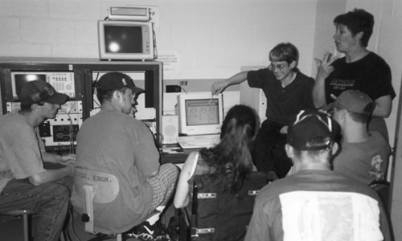

[This article is modified from a paper which originally appeared in Technical Signs 1 & 2: Project Overview and Reading Technical Signs Diagrams by Frank Caccamise, William Newell, Marilyn Mitchell, et alia. (Rochester, NY: National Technical Institute for the Deaf, 1993)]
Introduction
Technical Signs Project materials provide an important resource for dealing with technical/ specialized (T/S) topics in American Signs Language (ASL). This appendix is meant to fit the TSP videotapes and manuals into a larger context so that one may see how to deal with T/S communication using all the resources one can summon to ensure the greatest clarity possible. This larger context includes interpreting audiotapes on various topics, reading books, attending Deaf events, devising do-it-yourself projects, furthering your education, subscribing to mailing lists (this term will be explained in another section), mentoring or being mentored, joining organizations, getting outside assessment and certification, meeting with people as a possible resource, reading periodicals and articles, teaching others, watching videotapes and CDs, visiting web sites, and attending workshops, and T/S sign vocabulary negotiation.1
Deaf people have traditionally had limited access to the dominant culture and there has not been a critical mass of Deaf scientists, technicians, or specialists within many fields to develop signs for all of the relevant terminology. This has left interpreters and teachers of deaf students in a quandary as to how to deal with T/S material linguistically. The so-called technical "signs"2 we may develop or borrow from others are not, in many cases, true signs nor are they unique representations of T/S vocabulary, but rather a negotiation between a sender and a receiver.
One important videotape series is addressing this problem. The Technical Sign Interview Series produced by the National Center on Deafness and the Western Region Outreach Center & Consortia. The Interviews are comprised of a series of videotaped interviews where deaf professionals discuss their occupations. They are conducted by second-generation native ASL users, designed to elicit the "deaf way" of describing complex actions and jobs. These videotapes, each approximately 30 to 45 minutes long, are designed for use by people who already have advanced ASL skills; no captions or voiceovers are provided. They are not intended to be "vocabulary lists" but instead models of how deaf people discuss technical information among themselves. This approach is preferable, but demanding.
Are technical "signs" true (ASL) signs?
Some of you may be taken aback to realize that many T/S "signs" are not true signs from a Deaf cultural perspective; that is, they are not a part of the lexicon of ASL. Some people think ASL can not accommodate T/S terms. To put this into perspective, let us examine how English itself handles such terminology. The oldest concepts in science, for example, are borrowed from the language of lay people, such as force, energy, and speed. Most of the more sophisticated terminology is borrowed from Greek or Latin words, although it would be possible to use compounds borrowed from lay terminology.
German scientist, however, frequently adopt lay terminology. For example, the English term "quadrilateral" is Viereck in German. The English term is from the Latin quadri, which means "four times", plus the Latin lateris, which means "side". The German term is a compound of two German words: vier, "four" plus Ecke, "corner". Similarly, "logatom articulation" is Silbenverständlichkeit in German. The English is from the Greek logos, "discourse" plus the Greek atom, "indivisible" plus the Latin articulatus, "to separate into joints". The German is again a compound of two German words Silben, "syllable" plus Verständlichkeit, "ability to understand".
If a German scientist were a chauvinist, s/he might look at American scientific terminology and feel that the English language was inferior to the German language because English must borrow so heavily from foreign sources, its own lexicon being too paltry to handle T/S terminology. But if we open our minds by studying many languages, we see that T/S terms (as well as many other items) are handled differently in different languages, and each way is valid within that language system.
If I were to point to one of the bones in my forearm and ask what is the English name for that, you might respond "radius". If I said, "Yes, yes, that's the Latin name for it, but what is the English term?" You might patiently respond, "English borrows from Latin to name that bone." Similarly, if you were to point to that bone and ask, "What is the sign for that?" and I fingerspelled R-A-D-I-U-S3, would you be surprised to learn that ASL also has the right to borrow from English without being called inadequate, anymore than terms like "radius" prove that the English language is inadequate?
When I discuss Judaism with non-Jewish friends, I am frequently uncomfortable with English translations of Jewish concepts, because they may lead to misunderstandings. For example, the Hebrew word ts'dakahmight be translated "charity", but "charity" has a Christian background to its meaning and implies done out of the goodness of one's heart, whereas ts'dakah means doing what is required for the poor, not optional. Perhaps a similar thing happens in reverse with Deaf people. A T/S term is introduced, and it may be perceived as a concept foreign to Deaf culture, the way balletis a foreign import to American cultures, not indigenous, and has retained its French name. Just as many ballet terms used in America are untranslated French, so Deaf people may prefer to leave many T/S terms fingerspelled.
It is perfectly reasonable to negotiate conventions to avoid fingerspelling, but it needs to be recognized that this negotiation is a shorthand, not part of ASL, and ASL is not at fault for dealing with terms through fingerspelling. I hope this clarifies what I mean by saying that many T/S "signs" are not really signs, only negotiations. All this may be well and good, but how does one deal with T/S terms in ASL?
Preparing for an assignment
Just as it is crucial for teachers to prepare how they will convey ideas during their instruction, interpreters need to anticipate what will be discussed within a given interpreted context, so they will be ready with T/S sign negotiations. Preparation has four parts: (A) fact finding, (B) consulting with informants, (C) meeting with the presenter, and (D) developing T/S "signs" when necessary.4
(A) Fact Finding
Before you approach presenters or other informants, know the right questions to ask them by researching the topic(s) for which you will interpret. Find written information on the topic that is brief enough to allow you the time to read it or, if the only thing available is lengthy, read the first sentence of each paragraph. Written information options include an article written by the presenter, a relevant article in an encyclopedia, a magazine (journal) article, an outline of the presentation itself, a copy of any handouts or overheads to be used during the presentation, a glossary of possible terminology that might be used, and pertinent dates and people's names.
For on-going assignments like classes, try to obtain old notes of the same or similar classes. If there is a notetaker, obtain current class notes regularly. Check with the library, the instructor, and other interpreters for a copy of the text. If not, order a desk (free) copy of the text or a similar text from the publisher.
Try to find a videotape/audiotape of the same presenter on the same topic, as close to the same topic as possible, or another presenter on the same topic. Find out background information from people acquainted with the presenter, knowledgeable future audience members, and the presenter's vitas (biographical articles). These will help you determine the presenter's speaking/signing style, attitude towards the topic, possible structure, and pacing.
There has been increased interest of late in ASL discourse, and having a clear structure to the text you generate is even more important that having each of the discrete parts clear but disjointed. The focus must be broadened from concern about the lexical (Am I picking the right sign/word?) to the textual (Does my message have a structure that matches the presenter's in intent, metanotative quality, clarity, and is adjusted to fit the target audience?).
You must also ask yourself the same questions that any good presenter must answer, if only unconsciously: Who is the audience? How knowledgeable are they about the topic? What is their expertise? What is their attitude about the subject? Will they have a chance to question the presenter? How interactive will the situation be?
(B) Consulting with informants
Before developing and negotiating a T/S "sign", research should be done to determine if there already is a way to represent a given concept using natural (ASL) signs. We will discuss dictionaries and videotapes under "Developing a T/S sign", but it is best to get the information "live" because you can check for understanding, proper production/pronunciation, and semantic field; that is, is this the right sign/word for the context I will be working in? Armed with concepts that are troublesome, various people can be used as resources for discovering extant T/S "signs", and that failing, developing possible new ones.
Native signers with content expertise are always the most desirable informants, because they are bilingual in their fields and can explain concepts and terminology in either language; for example, Pat Graybill for Catholicism and Ted Supalla for linguistics. Always give context to your questions: "derivative" means something quite different in calculus than it does in chemistry.
Content experts who are non-native signers may be of help in telling you what they have used in the past. These may include interpreters who have expertise in specific areas. Having native experts is ideal but not frequently realized.
Content experts without any knowledge of ASL can still help you to get a thorough understanding of a concept outside of your field of expertise. This includes teachers, tutors, and people working in the field. Use the materials discussed in "fact finding" to give you focus. Have specific questions; asking someone to explain quantum mechanics to you in the time allotted for your appointment is like Ben Bag-Bag who asked Rabbis Shammai and Hillel to explain the Torah (all of Jewish Law) while standing on one foot.
Native signers who are not content experts can help you find a "sign" if you explain the concept from your own understanding or from what you have learned from other content experts. You need to consult the group mentioned in the previous paragraph first so that you understand the concepts involved well enough to explain it clearly to your Deaf informant. How much time you will devote to preparation will depend on the impact of the assignment, what is reasonable, and how helpful this information will be for the future, either this assignment (if on-going) or others.
You may wish to ask the coordinator of your agency or school to assign you to basic courses in a given field to interpret (or even audit or take for credit if you enjoy this benefit), then work your way up to more advanced courses as you understand more and more. Ask interpreters experienced in this field if they would be willing to mentor you, have you observe, or work as a team in such assignments.
(C) Meeting the presenter
Now that you have collected all the facts that you could, it is time to meet the presenter. Even if you can only confer with the presenter for a few minutes before, it will add to the quality of your interpretation. As soon as you get an assignment, you should ask the contact person how to contact the presenter. Review any of the fact-finding items listed above that the presenter has special knowledge of. Make sure you have obtained everything you can from other sources before you meet, just in case the meeting falls through or is very cursory. If it is possible to meet with the presenter long before the assignment (such as if the presenter is local) you may wish to do this before the other informants we have discussed, since the presenter may be able to suggest resources you have not thought of or do not know how to locate. The presenter can be one of your most important informants, but as we all know only too well, there is often little or not time for such a meeting. At the least you may be able to get an outline of the presentation itself, a copy of any handouts or overheads to be used during the presentation, a glossary of possible terminology that might be used, and pertinent dates and people's names.
(D) Developing a T/S "sign"
T/S "signs" have been developed using various strategies. These strategies often lay outside of the "natural sign development process" and the TSP loop of collection, evaluation, selection, recording and sharing (CESRS). This is an ongoing priority for interpreters and not necessarily the last stop in this four-part preparation, but I have kept it to the end because there is so much to say about it. Besides the people mentioned above, there are English dictionaries, ASL dictionaries, and videotapes on specialized vocabulary, the Technical Sign Project videotapes being the most extensive. While encountering a vocabulary item that has no set T/S "sign" or none that is known to you after researching with the groups mentioned above, you can follow the 12 principles enumerated below. If you don't know what the term means, look it up in the dictionary. I suggest TheFreeDictionary.com for most terms. To find dictionaries for specialized disciplines, go to Resources for technical/specialized interpreting and find your discipline. For a rubric based on the principles below, see Technical/Specialized sign rubric.
(1) Use an ASL sign that conceptually matches the English vocabulary item. To negotiate a sign, fingerspell the English word that it is to represent while topicalizing (head tilted back and eyebrows up), then produce the sign with a wrinkled nose and nodding head (symbolized as sn for sign-negotiation) to show that agreement is being sought, which may be glossed as follows:
Make sure to negotiate the item the first few times it is introduced to familiarize the consumer with the English word, if you deem the exact word essential. If the consumer objects to the sign, negotiate (hence the name). If you have several consumers who disagree with each other about what sign to use, let them decide, unless they are unable to agree.
(2) Since all signs cannot be equated with one English word, even in a specific context (and vice versa), it may be helpful to try an explanatory phrase that will convey the necessary meaning. When first approaching any second language we often think of it in terms of a lexicon, that is, a list of possible words to be used in communication. We may ask the teacher what does that word (or sign) mean, expecting one English word. But any one word in a language often has a number of different meanings. The likelihood that two languages will choose the same group of meanings to apply to one word is small.
For example, arbitrary point -
_rhq represents a rhetorical question, where the body is brought forward and the head back and leaning towards the dominant side while being shaken slightly; the sign UP-TO-YOU is sometimes called THINK~SELF and is moved in an arc to include everyone present ("all"). Do not search for a single sign for "arbitrary". If it is important that the student know the English word, then show the English word by fingerspelling. Using an explanatory sign phrase will not stress the English and may obfuscate the concept as well. Make sure you have the consumers' agreement so they can connect this sign phrase with written material about the given word.
(3) If a lengthy sign phrase must be used that is essentially an explanation, use that at first and then find an abbreviated form for later reference back to this T/S concept. When the item comes up again and the consumer seems uncertain of the meaning, use an abbreviated form of this explanation to clarify. For example, concavity -
The bC-CL is held with curved index finger and thumb pointing up (for concave up) and down (for concave down); (<) and (>) represent body shifts to the left and to the right; q represents a yes-no question, where the body is brought forward, the head is held back and the eyebrows are raised; whq represents a question that can not be answered with a yes or no (who? what? where? and so on), where the body is brought forward, the head is held down and the eyebrows squinted.
Later, when "concavity" comes up you can just use the abbreviation F-WORK SHAPE. It is similar to pronouns: "she" and "he" can be substituted for people names if their referents are clear by context.
(4) Fingerspell the item. For example, "rational number" - R-A-T-I-O-N-A-L NUMBER . The word "rational" in this context is derived from "ratio", not from the root for reason, so avoid the sign REASON. Some interpreters avoid fingerspelling at all costs. Unthinking use of fingerspelling along with the pressure of a fast-paced lecture on a T/S topic that may be entirely foreign to the interpreter could lead to Repetitive Stress Injury, but this can be ameliorated by proper preparation, use of processing ("lag") time, and judicious use of fingerspelling combined with the other techniques mentioned here.
(5) Use a compound sign, that is, two signs that are joined together by blending handshapes (anticipation, perseveration, or clipping). These signs cannot be invented, just like an immigrant cannot decide that the English word for the operation of a computer is "computeration". These signs evolve naturally as in all languages and must be learned by observing native users of ASL. You are familiar with the sign HOMEWORK, which is a compound of the two signs HOME and WORK. The first sign has a double movement, but when compounded, the double movement becomes single. This is called a "clipping" in linguistics.
Another compound is the sign SPECIFY, which could also be written SAY~EXACT to show its two elements. The "baby O" [bO] handshape of EXACT moves from the mouth (instead of signing SAY) and meets the non-dominant hand (which is held ready during the first part) to form EXACT. This is called "anticipation". This is one of the ways that ASL expands its lexicon. When people say that ASL has 3,000 or 5,000 signs, they overlook many modulations that increase this number several hundredfold.
(6) Restructure the sentence or phrase to fit the syntax (sign order) of ASL, or to use signs that are already known to you. The sentence "Mathematical concepts and notations allow scientific statements to be represented with an economy of words and symbols," has a passive which is inadmissible in ASL and "with an economy of" is a strictly English structure. This could be handled as:
This is a rather complex ASL sentence with modulations of EXPLAIN (non-dominant hand is held still while dominant hand moves towards and away from signer while hand moves downwards) and SUMMARIZEwg (fingers flutter as the sign is produced), the special use of UNDERSTAND as a conjunction, and topicalization (head back, eyebrows up). Whether or not the glossed sentence conveys to you exactly how to sign it, the point is to show that ASL is quite capable of sophistication. If you are not yet able to use it in this way, the fault lies not in ASL, but in the need to improve your command of the language.
(7) Use the standardized symbol associated with the concept, such as (a) a Roman letter, (b) a Greek letter5, (c) initial letters of the phrase, (d) a standard abbreviation, (e) a non-standard (negotiated) abbreviation, or (f) any other kind of orthography. For example, (a) "momentum" - "P", (b) "[wave] phase" - (phi): hold the dominant "1" hand so that the palm orientation is towards the non-dominant side and touches its thumbside to the pinkie side of the non-dominant "O" hand, (c) "Kirchoff's Voltage Law" - K-V-L, (d) "kilogram" - K-G, (e) "differential" - D-I-F-F, (f) "integral" - I-CL'draw integral sign': the dominant "I" hand draws an integral symbol in the air. A good time to set up these "signs" is when the notation itself is introduced on the board.
(8) Classifiers, which show (a) movement, (b) placement, (c) shape, (d) size or amount, (e) depth, and so on, can be very useful.6 For example, (a) "the sudden displacement of a meter's needle" - C,1-CL'needle jump": the non-dominant "C" hand is held up to represent the body of a meter casing and the dominant "1" hand is held against it as if it were the needle on the dial; the dominant hand is moved suddenly to show the exact behavior of the needle; (b) "crystal" - A-T-O-M, (2h)A-CL"sweep in rows": both hands are held in an "A" with palms facing each other and thumbs point upward; the non-dominant hand is held stationary while the dominant hand moves towards its side; when the movement is complete, the hands come together again, descend, and repeat the previous motion; this is repeated; (c) "concave lens" - L-E-N-S, B^,1-CL'concave surface': the NDS of the index finger rubs against the palm of the NDH; (d) "a sudden drop in current" -
(9) Learn how to inflect ASL verbs so that they can represent specific concepts. For example, "the limit as x approaches zero. . ." -
(10) Use initialized signs very sparingly. For example, "nucleus" - N-CENTER. This may not be acceptable to ASL users. It ranks with the previous example of "computeration". It may sound OK to the immigrant, but is just nonsense to native ASL users. Remember, negotiate.
(11) If the concept is from a foreign culture, you may find it helpful to borrow a foreign sign from that culture. For example, Deaf people are increasing their use of foreign countries' signs for themselves and their cities,8 rather than the old ASL signs (which are sometimes seen as pejorative) or fingerspelling. This is happening for regular vocabulary items also, such as vodka,smorgasbord,and sushi.9
(12) Use and enhance your knowledge of classifiers. Find a picture or video of how the object or concept looks or behaves, and use classifiers. I suggest an AltaVista image search.
Caveats for all sign language users
(1) Remain flexible. Just as you may need to communicate an idea in several different ways to accommodate the different learning styles of students, you may need to explain a concept in more English style for adult learners of ASL and a more ASL style for native signers.
(2) One English word may require different signs, depending on content , and vice versa.10 A "derivative" in math is a local measure of the slope of a function; in chemistry, it is the result of a chemical reaction. Although the same English word is used, the same "sign" should not be used for both.
(3) The "sign" should not conflict with ASL rules. For example, "capacitor" - C-PREVENT + [R] MOVES > DS: the sign for "prevent" is produced with both "C" hands, then the upright dominant "R" hand moves towards the dominant side. This violates ASL because a word class is not changed by the sequential addition of a sign, but by an internal change. This attempts to make a noun out of a verb by adding a "sign" to it. Continue the lifelong process of learning a second language. And do not neglect improving your native language, either. A better negotiation might be to keep C-PREVENT with a double movement as the noun "capacitor" and and simply use the standard abbreviation "C", for "capacitance".
(4) The "sign" should not belong to the wrong word class. CALCULATE is a verb. The English word "calculation" is a noun. Restructure your sentence so that you can use CALCULATE as a verb, or use something like RESULT for the noun.
(5) Verbs are a closed word class. The T/S "sign" for "integral" is I-CL'draw integral sign'. "Integral" is a noun; this same "sign" should not be used for "integrate", which is a verb. Instead use "calculate integral": CALCULATE 1-CL'draw integral'.
(6) Be aware of how signs show spatial or other visual information and make sure that your production does not conflict with it. If you are going to use (2h)B-CL'slopes to right' for slope (the two "B" hands separate as in FLOOR but the "floor" is tilted upwards towards the right). Make sure that it slopes one way for positive slope, another for negative slope, and is level for zero slope.
(7) The Technical Signs Project videotapes [see Technical resources: Videotapes - TSP or Interpreting for spiritual/ religious settings: Christian videotapes - TSP] focus on lexicon and are descriptive, rather than prescriptive. Use the broader context outlined in this paper to expand your understanding of both ASL and English.
(8) Learn non-manual grammar.11 Do not lose important information on the mouth trying to articulate every word. Use your mouth, eyebrows, shoulders, in short your whole body to show grammatical information. It is not just "mime".
(9) Do not conflict with textbook symbolism. Do not use standard abbreviations or symbols for concepts if the textbook uses something different; it will only confuse matters.
(10) Remember to sign negotiate. The consumer may not accept or understand the "sign". Renegotiate the "sign" when you feel the consumer has forgotten the meaning you previously negotiated.
(11) A string of vocabulary items is not enough; go for meaning. Observe how Deaf people talk about the topic so that not only are you using the right "signs", but grammatical sentences that convey the concept accurately.
(12) If you are interpreting from ASL to English, make sure you know the appropriate English terminology also. Even if the principal presenter is not using ASL, there may be questions from the audience that you must be prepared to interpret into appropriate T/S English.
During the actual assignment
Have other interpreters observe you and tell them what you want them to look for. Set specific goals for yourself within an assignment. Watch for and reinforce consumer feedback; it is a precious learning tool. Videotape yourself or others. Use your teammate; don't just take turns. Outline on-going professional development for the future; be specific, realistic, measurable, and establish a timeline.
Summary
In summary, prepare for an assignment by gathering information about the topic, presenter, and audience. Consult with informants to determine potential challenges that must be faced. Meet with the presenter. Throughout your career, collect, develop, and negotiate T/S "signs" as well as enhancing your own command of English and ASL to deliver a quality message.
Footnotes